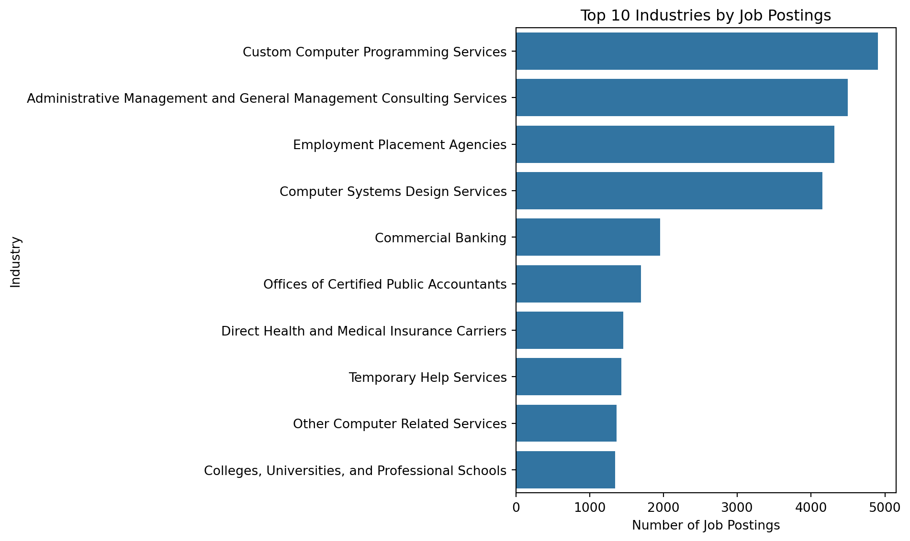
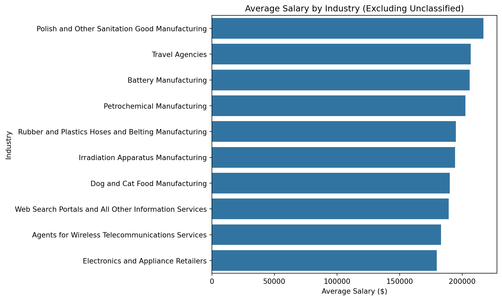
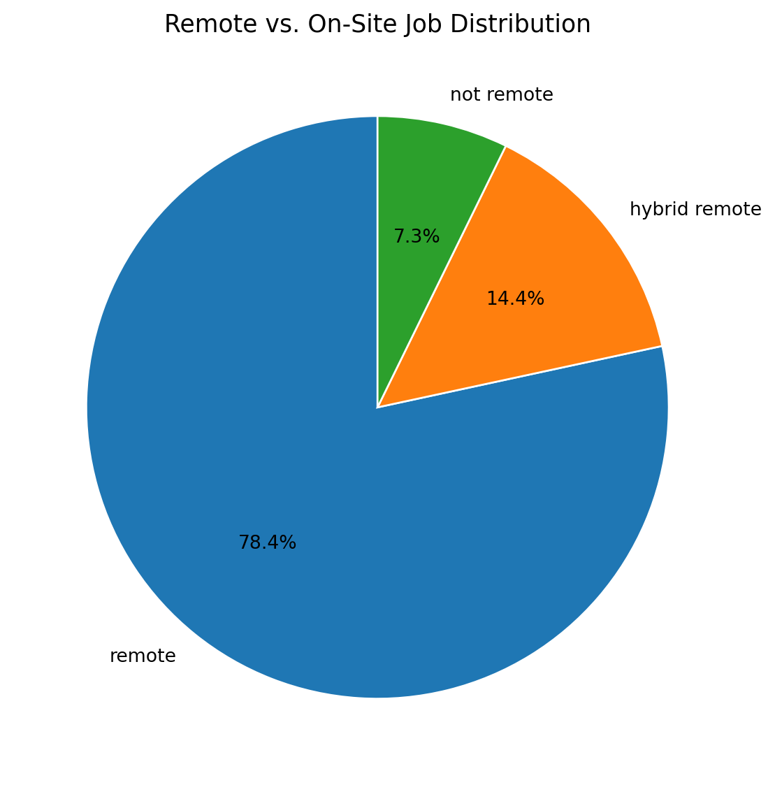

import os, datetime
os.makedirs("logs", exist_ok=True)
with open("logs/_ping.txt", "w", encoding="utf-8") as f:
f.write("hello @ " + str(datetime.datetime.now()) + "\n")
print("WROTE: logs/_ping.txt")Data Analysis
Comprehensive Data Cleaning & Exploratory Analysis
1 Data Cleaning & Preprocessing
In this section, we clean the Lightcast dataset, log each step, and save a reproducible cleaned CSV for downstream EDA.
1.1 Setup & Load (clean version)
import os, datetime
import numpy as np
import pandas as pd
import matplotlib.pyplot as plt
import missingno as msno
import subprocess
# Handle missingno (optional)
try:
import missingno as msno
HAS_MSNO = True
except ImportError:
HAS_MSNO = False
# Paths
DATA_PATH = "data/lightcast_job_postings.csv"
CLEAN_PATH = "data/cleaned_lightcast.csv"
LOG_PATH = "logs/cleaning_log.txt"
FIG_MISS = "figures/missing_values_heatmap.png"
# Ensure output dirs exist
os.makedirs("logs", exist_ok=True)
os.makedirs("figures", exist_ok=True)
# Logger
def log(msg: str):
print(msg)
with open(LOG_PATH, "a", encoding="utf-8") as f:
f.write(msg.rstrip() + "\n")
# Start a fresh log
with open(LOG_PATH, "w", encoding="utf-8") as f:
f.write("=== DATA CLEANING LOG START ===\n")
# Ping file (to confirm write permission)
with open("logs/_ping.txt", "w", encoding="utf-8") as f:
f.write("hello from python @ " + str(datetime.datetime.now()) + "\n")
# AUTO-DOWNLOAD IF MISSING
if not os.path.exists(DATA_PATH):
gdrive_url = "https://drive.google.com/uc?id=1V2GCHGt2dkFGqVBeoUFckU4IhUgk4ocQ"
try:
import gdown
gdown.download(gdrive_url, DATA_PATH, quiet=False)
except Exception as e:
raise FileNotFoundError(f"Could not download dataset.\nError: {e}")
# Load data
if not os.path.exists(DATA_PATH):
raise FileNotFoundError(f"Dataset not found at {DATA_PATH}. Check path & working dir.")
df = pd.read_csv(DATA_PATH, low_memory=False, on_bad_lines="skip")
log(f"Loaded dataset → rows: {len(df):,}, cols: {df.shape[1]}")1.2 Drop redundant/irrelevant columns
columns_to_drop = [
"ID","URL","ACTIVE_URLS","DUPLICATES","LAST_UPDATED_TIMESTAMP",
"NAICS2","NAICS3","NAICS4","NAICS5","NAICS6",
"SOC_2","SOC_3","SOC_5"
]
before_cols = df.shape[1]
df.drop(columns=columns_to_drop, inplace=True, errors="ignore")
after_cols = df.shape[1]
log(f"Dropped {before_cols - after_cols} columns; remaining columns: {after_cols}")
# Normalize names & basic types
df.columns = df.columns.str.strip().str.upper()
if "POSTED" in df.columns:
df["POSTED"] = pd.to_datetime(df["POSTED"], errors="coerce")
if "SALARY" in df.columns:
df["SALARY"] = pd.to_numeric(
df["SALARY"].astype(str).str.replace(r"[^0-9.-]", "", regex=True),
errors="coerce"
)1.3 Visualize & handle missing values
if HAS_MSNO:
plt.figure(figsize=(10,6))
msno.heatmap(df)
plt.title("Missing Values Heatmap", fontsize=14)
plt.tight_layout()
plt.savefig(FIG_MISS, dpi=150)
plt.show()
log(f"Saved missingness heatmap → {FIG_MISS}")
else:
log("missingno not installed; skipping heatmap.")
# Log top-20 missing columns
na_pct = df.isna().mean().sort_values(ascending=False) * 100
log("Top-20 columns by missing%:")
for col, pct in na_pct.head(20).items():
log(f" - {col}: {pct:.1f}%")
# Drop columns with >50% missing
thresh = len(df) * 0.5
before_cols = df.shape[1]
keep_cols = ["SALARY"]
to_drop = [c for c in df.columns if df[c].isna().sum() > thresh and c not in keep_cols]
df.drop(columns=to_drop, inplace=True)
after_cols = df.shape[1]
log(f"Dropped {before_cols - after_cols} high-missing columns (>50%). Remaining: {after_cols}")
# Impute numeric
if "SALARY" in df.columns:
med_salary = df["SALARY"].median(skipna=True)
df["SALARY"].fillna(med_salary, inplace=True)
df.loc[(df["SALARY"] < 1) | (df["SALARY"] > 1_000_000), "SALARY"] = med_salary
log(f"Filled & clipped Salary values with median = {med_salary:.2f}")
# Impute categorical
for cat in ["NAICS_2022_6_NAME","REMOTE_TYPE_NAME","LOCATION"]:
if cat in df.columns:
df[cat] = df[cat].fillna("Unknown").astype(str).str.strip()
log(f"Filled {cat} NAs with 'Unknown'")<Figure size 960x576 with 0 Axes>
Saved missingness heatmap → figures/missing_values_heatmap.png
Top-20 columns by missing%:
- ACTIVE_SOURCES_INFO: 89.2%
- MAX_YEARS_EXPERIENCE: 88.4%
- MAX_EDULEVELS: 77.5%
- MAX_EDULEVELS_NAME: 77.5%
- LIGHTCAST_SECTORS: 75.5%
- LIGHTCAST_SECTORS_NAME: 75.5%
- SALARY: 57.5%
- SALARY_FROM: 55.3%
- SALARY_TO: 55.3%
- ORIGINAL_PAY_PERIOD: 55.3%
- DURATION: 37.7%
- MIN_YEARS_EXPERIENCE: 31.9%
- MODELED_DURATION: 26.6%
- MODELED_EXPIRED: 21.3%
- EXPIRED: 10.8%
- MSA_INCOMING: 5.5%
- MSA_NAME_INCOMING: 5.5%
- MSA: 5.4%
- MSA_NAME_OUTGOING: 5.4%
- MSA_OUTGOING: 5.4%
Dropped 9 high-missing columns (>50%). Remaining: 109
Filled & clipped Salary values with median = 116300.00
Filled NAICS_2022_6_NAME NAs with 'Unknown'
Filled REMOTE_TYPE_NAME NAs with 'Unknown'
Filled LOCATION NAs with 'Unknown'/tmp/ipykernel_2636/103708030.py:33: FutureWarning: A value is trying to be set on a copy of a DataFrame or Series through chained assignment using an inplace method.
The behavior will change in pandas 3.0. This inplace method will never work because the intermediate object on which we are setting values always behaves as a copy.
For example, when doing 'df[col].method(value, inplace=True)', try using 'df.method({col: value}, inplace=True)' or df[col] = df[col].method(value) instead, to perform the operation inplace on the original object.
df["SALARY"].fillna(med_salary, inplace=True)1.4 Remove duplicates
subset_cols = [c for c in ["TITLE","COMPANY","LOCATION","POSTED"] if c in df.columns]
before = len(df)
if subset_cols:
df.drop_duplicates(subset=subset_cols, keep="first", inplace=True)
after = len(df)
log(f"Removed duplicates by {subset_cols}: {before - after} rows dropped; remaining: {after}")1.5 Optional salary sanity filter
if "SALARY" in df.columns:
bad = (df["SALARY"] < 1) | (df["SALARY"] > 1_000_000)
n_bad = int(bad.sum())
if n_bad > 0:
df.loc[bad, "SALARY"] = np.nan
med2 = df["SALARY"].median()
df["SALARY"].fillna(med2, inplace=True)
log(f"Clipped extreme Salary ({n_bad} rows) and refilled with median {med2:.2f}")1.6 Save & summary
df.to_csv(CLEAN_PATH, index=False)
log(f"Saved cleaned dataset → {CLEAN_PATH}")
summary = f"Rows: {len(df):,}\nColumns: {df.shape[1]}\nSample columns: {list(df.columns)[:12]}"
print(summary)
log("✅ Cleaning pipeline finished successfully.")2 Exploratory Data Analysis (EDA)
Exploratory Data Analysis (EDA) allows us to identify patterns and distributions in the job market dataset.
In this section, we focus on three aspects: 1. Job postings by industry
2. Salary distributions
3. Remote vs. on-site job proportions
2.1 Job Postings by Industry
Understanding industry demand helps reveal which sectors are most active in hiring.
import pandas as pd
import matplotlib.pyplot as plt
import seaborn as sns
import os
# Load dataset
df = pd.read_csv("data/cleaned_lightcast.csv", low_memory=False)
# Ensure /figures directory exists
os.makedirs("figures", exist_ok=True)
# col
industry_col = "NAICS_2022_6_NAME"
# Clean up column names
df.columns = df.columns.str.strip()
#drop unclassified
df = df[~df["NAICS_2022_6_NAME"].str.lower().str.contains("unclassified", na=False)]
# Count top 10 industries
top_industries = df[industry_col].value_counts().head(10)
plt.figure(figsize=(10, 6))
sns.barplot(x=top_industries.values, y=top_industries.index, orient="h")
plt.title("Top 10 Industries by Job Postings")
plt.xlabel("Number of Job Postings")
plt.ylabel("Industry")
plt.tight_layout()
plt.savefig("figures/industry_postings.png", dpi=300)
plt.show()
A bar chart was chosen to visualize the number of job postings across different industries. This format makes it easy to compare industry demand and helps job seekers understand which sectors have the highest hiring activity. Job demand is concentrated in tech and professional services: Custom Computer Programming Services leads, followed closely by Management Consulting, Employment Placement Agencies, and Computer Systems Design—each with ~4–5k postings. After these, volumes drop sharply to a second tier (Commercial Banking, CPA offices, Temporary Help, Health/Medical Insurance, Other Computer Services, Colleges/Universities) at ~1.3–2.0k. The prominence of staffing/placement agencies signals broad, economy-wide hiring, while the tech-heavy top ranks highlight sustained demand for digital and knowledge-worker skills.
2.2 Salary Distribution by Industry
import os
import pandas as pd
import matplotlib.pyplot as plt
import seaborn as sns
os.makedirs("figures", exist_ok=True)
df = pd.read_csv("data/cleaned_lightcast.csv", low_memory=False)
# Define column names
industry_col = "NAICS_2022_6_NAME"
salary_col = "SALARY"
# Filter and clean salary
df = df[df[salary_col] > 0]
#df = df[~df[industry_col].str.lower().str.contains("unclassified")]
# Compute average salary by industry
avg_salary = (
df.groupby(industry_col)[salary_col]
.mean()
.sort_values(ascending=False)
.head(10)
)
# Visual
plt.figure(figsize=(10, 6))
sns.barplot(
x=avg_salary.values,
y=avg_salary.index,
orient="h"
)
plt.title("Average Salary by Industry (Excluding Unclassified)")
plt.xlabel("Average Salary ($)")
plt.ylabel("Industry")
plt.tight_layout()
# save
plt.savefig("figures/average_salary_by_industry.png", dpi=300, bbox_inches="tight")
plt.show()
Another bar chart was used to present the average salary across industries. Bar charts are effective for showing ranked values, making it easy to identify the highest-paying sectors and support data-driven career decisions. Average pay skews toward specialized, capital-intensive niches. Polish & Other Sanitation Good Manufacturing tops the list (~$215k), followed by Rubber & Plastics Hoses/Belting and Agents for Wireless Telecommunications Services (~$185–$200k). A middle tier includes Irradiation Apparatus and Misc. Waste Management (~$175–$185k), while Web Search Portals, Plastics Bag/Pouch, and transport/retail (Rail Support, Electronics & Appliance Retailers, Wineries) cluster near the lower bound (~$150–$165k). Overall, excluding unclassified roles, high salaries concentrate in specialized manufacturing and regulated services.
2.3 Remote vs. On-Site Jobs
import os
import pandas as pd
import matplotlib.pyplot as plt
import seaborn as sns
os.makedirs("figures", exist_ok=True)
df = pd.read_csv("data/cleaned_lightcast.csv", low_memory=False)
# Clean the REMOTE_TYPE_NAME column
df["REMOTE_TYPE_NAME"] = (
df["REMOTE_TYPE_NAME"]
.astype(str).str.strip().str.lower()
.replace({"[none]": None, "none": None, "unknown": None, "nan": None, "na": None, "null": None, "": None})
)
# Count each type
remote_counts = df["REMOTE_TYPE_NAME"].value_counts()
# Visual
plt.figure(figsize=(6, 6))
plt.pie(
remote_counts.values,
labels=remote_counts.index,
autopct="%1.1f%%",
startangle=90,
wedgeprops={"edgecolor": "white"}
)
plt.title("Remote vs. On-Site Job Distribution", fontsize=13)
plt.tight_layout()
plt.savefig("figures/remote_vs_onsite.png", dpi=300, bbox_inches="tight")
plt.show()
A pie chart was selected to display the proportions of job types (remote, hybrid, and on-site). This format offers an intuitive visual summary, helping job seekers understand the flexibility of job opportunities in 2024.
The job market here is overwhelmingly remote: nearly four out of five postings (78.4%) are fully remote, while another 14.4% offer hybrid options. Only 7.3% require full on-site work. This mix signals strong employer flexibility and broad access to roles regardless of location, with hybrid emerging as a meaningful—but secondary—model. For candidates, remote-first skills (self-management, async collaboration) are likely at a premium, while fully on-site opportunities are comparatively scarce.